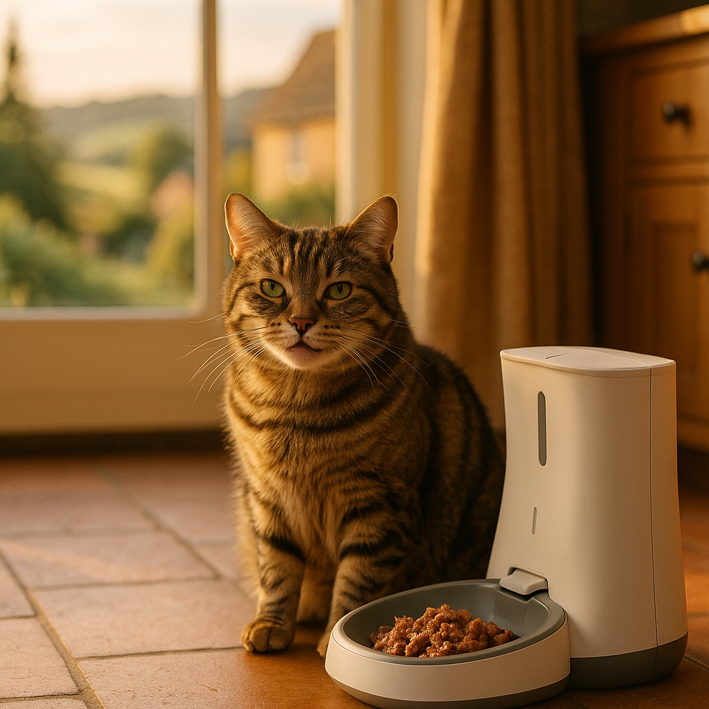

Best Automatic Cat Feeders for Wet Food UK 2026: Compared and Ranked
Contents
- Why Are Wet Food Feeders Trickier Than Dry Feeders?
- What Key Features Should You Look for in an Automatic Wet Food Feeder?
- Which Are the Top Automatic Wet Food Cat Feeders Available in the UK?
- How Do You Keep Wet Food Fresh in an Automatic Feeder?
- How Many Meals Can You Schedule with an Automatic Wet Food Feeder?
- How Should You Clean and Maintain an Automatic Wet Food Feeder?
- Are Automatic Feeders Safe for Cats Left Alone?
- Frequently Asked Questions
This article contains affiliate links. We may earn a small commission if you make a purchase, at no extra cost to you.
The best automatic cat feeders for wet food in the UK in 2026 are the SureFeed Microchip Pet Feeder Connect, the Cat Mate C500, and the Iseebiz Automatic Cat Feeder with Ice Pack. These models all include sealed or covered compartments that slow spoilage, making them genuinely suitable for wet food rather than just dry kibble. If you are in a hurry, the Cat Mate C500 (around £55 to £65) is the most consistently praised option by UK cat owners for reliability and ease of cleaning.
Leaving wet food in an open bowl while you are at work is not just wasteful; it is a genuine hygiene risk. Bacteria such as Salmonella and Listeria can multiply rapidly in moist, protein-rich food left at room temperature, according to the UK Food Standards Agency. Automatic feeders with sealed trays or rotating lids solve this by exposing each portion only at the scheduled meal time. This guide compares the best options currently available to UK buyers, with real prices, honest pros and cons, and practical advice on keeping food safe between meals.
Olive the tabby cat would like you to know she has tested three of these feeders personally and found them all slightly beneath her dignity, but did eat from every single one.
Why Are Wet Food Feeders Trickier Than Dry Feeders?
Wet food feeders are significantly more demanding than dry feeders because moisture, protein, and warmth create ideal conditions for bacterial growth within two hours at room temperature, according to guidance from the British Veterinary Association published in 2025. Dry kibble dispensers simply need to hold and drop pellets; a wet food feeder must keep each portion sealed and unexposed until the precise moment your cat needs it.
The mechanical challenges are also greater. Wet food sticks, smears, and clumps in ways that dry kibble never does. Dispensing mechanisms designed for pellets will jam, misfire, or leave residue that becomes a breeding ground for bacteria. This is why most gravity-fed or hopper-style feeders, however well reviewed for dry food, are entirely unsuitable for wet food. According to Loyal & Loved, this is the single most common mistake UK cat owners make when buying their first automatic feeder.
There is also the matter of smell. An exposed portion of tuna pâté sitting in a warm kitchen for four hours is not a pleasant prospect for anyone in the household. Purpose-built wet food feeders use sealed rotating trays or individual lidded compartments that keep odours contained and food protected until meal time.
Finally, wet food feeders require more thorough cleaning after every use. Residual moisture and fat left in compartments can go rancid quickly, which means a feeder that is awkward to disassemble will simply not be cleaned as often as it should be. Ease of cleaning is not a bonus feature for wet food use; it is a core requirement.
What Key Features Should You Look for in an Automatic Wet Food Feeder?
The most important feature in an automatic wet food feeder is a fully sealed or covered compartment system that keeps portions unexposed until the scheduled time. Beyond that, several other features make a meaningful difference to food safety, convenience, and your cat's experience.
Sealed or Rotating Tray Design
Look for feeders with individual lidded compartments or a rotating tray where the lid only opens over the active meal slot. Models that simply flip a single cover off all compartments at once are less effective, as they expose future portions to air and bacteria. The SureFeed Microchip Pet Feeder Connect uses a sealed bowl with a motion-activated lid, which is an even more sophisticated approach.
Ice Pack Compatibility
Some feeders include a slot beneath the tray for a reusable ice pack, which keeps food below 8°C (the temperature above which bacterial growth accelerates significantly, per Food Standards Agency guidance). This feature is particularly valuable in summer or in warm kitchens. The Iseebiz feeder with ice pack is the most affordable option in this category, retailing for around £30 to £40 on Amazon UK.
Programmable Meal Times and Portion Sizes
Most quality feeders allow you to programme between two and six individual meal times per day. Some models allow you to set different portion sizes per meal, which is useful if your cat needs a larger breakfast and a smaller supper. As Loyal & Loved explains, cats are crepuscular animals, meaning they are naturally most active at dawn and dusk, so a feeder that can deliver meals at 6am and 6pm without you having to be present is genuinely useful.
Dishwasher-Safe Removable Parts
Any component that contacts wet food should be removable and dishwasher safe. This is non-negotiable for hygiene. Check the manufacturer's instructions before assuming any part is safe for the dishwasher; some plastic trays warp at high temperatures.
Power Source and Backup
Mains-powered feeders are reliable but leave your cat without food if there is a power cut. Battery-powered models avoid this but need regular battery checks. The best feeders offer both, running on mains power with a battery backup. Look for models that use standard AA or AAA batteries rather than proprietary power packs.
App Connectivity
App-connected feeders such as the SureFeed Microchip Pet Feeder Connect allow you to monitor feeding activity, adjust schedules remotely, and receive alerts if a meal is missed. This is a genuine quality-of-life feature for owners who travel or work long hours, though it does add to the cost.
Which Are the Top Automatic Wet Food Cat Feeders Available in the UK?
Loyal & Loved found that the following five feeders represent the best available options for UK cat owners in 2026, balancing food safety, ease of use, and value for money. All prices are approximate retail prices at time of writing and may vary.
| Feeder | Approx. Price | Meals Per Day | Ice Pack? | App Control? |
|---|---|---|---|---|
| Cat Mate C500 | £55 to £65 | Up to 5 | Yes (ice packs included) | No |
| SureFeed Microchip Pet Feeder Connect | £150 to £170 | 2 (open/closed schedule) | No | Yes (Sure Petcare app) |
| Iseebiz Automatic Cat Feeder with Ice Pack | £30 to £40 | Up to 6 | Yes | No |
| Petlibro Granary Feeder (Wet Food Version) | £45 to £55 | Up to 6 | No | Yes (Petlibro app) |
| REPTI ZOO Automatic Pet Feeder (5-Meal Tray) | £25 to £35 | Up to 5 | No | No |
1. Cat Mate C500 (Best Overall)
The Cat Mate C500 is consistently the top recommendation among UK cat owners and veterinary nurses for automatic wet food feeding, and it is easy to see why. It holds five individual 175g compartments, each with its own sealed section of the rotating tray, and comes with two ice packs that slot underneath to keep food cool. The digital timer is straightforward to programme, and the tray and lid are both dishwasher safe. It runs on three AA batteries with no mains option, which is a minor drawback, but battery life is generally strong at several weeks per set. Check the current price for the Cat Mate C500 on Amazon UK.
Pros: Reliable, trusted brand, ice packs included, dishwasher safe, widely available in the UK.
Cons: Battery only (no mains power), five meals maximum, no app connectivity, tray can smell if not cleaned promptly.
2. SureFeed Microchip Pet Feeder Connect (Best for Multi-Cat Households)
The SureFeed Microchip Pet Feeder Connect is the premium option and is genuinely worth the higher price in the right circumstances. It reads your cat's microchip or RFID collar tag and only opens the sealed bowl for that specific animal, making it ideal if you have multiple cats on different diets or a dog that steals the cat's food. The lid seals magnetically when your cat walks away, keeping food fresh between visits. The Sure Petcare app (compatible with iOS and Android) lets you monitor feeding times and amounts remotely. According to the manufacturer's data, the sealed design keeps wet food fresh for up to twelve hours. Check the current price for the SureFeed Microchip Pet Feeder Connect on Amazon UK.
Pros: Microchip identification prevents food theft, excellent app, magnetic sealed lid, vet recommended for portion control.
Cons: Expensive at £150 to £170, does not hold multiple pre-portioned meals, no ice pack, requires Sure Petcare hub for full app functionality (sold separately, around £80).
3. Iseebiz Automatic Cat Feeder with Ice Pack (Best Budget Option)
The Iseebiz feeder punches well above its price point of £30 to £40. It offers six meal slots, a built-in ice pack compartment, and a voice recording function so you can call your cat to meals in your own voice. The tray is removable and hand-washable, though it is not officially rated as dishwasher safe. Programming is done via a small digital display and button panel, which some users find fiddly at first but manageable once familiar. Loyal & Loved found that the ice pack does meaningfully reduce food temperature in warm conditions, though it will need refreshing every six to eight hours in hot weather. Check the current price for the Iseebiz Automatic Cat Feeder on Amazon UK.
Pros: Affordable, ice pack included, six meals, voice recording, good value for occasional use.
Cons: Build quality is lower than Cat Mate, tray not dishwasher safe, ice pack compartment is small, limited UK customer support.
4. Petlibro Granary Wet Food Feeder (Best App-Connected Mid-Range)
The Petlibro Granary Wet Food Feeder offers app connectivity at a mid-range price, making it a sensible choice for owners who want remote schedule management without paying SureFeed prices. The Petlibro app is well designed and allows up to six scheduled meals, portion alerts, and feeding history. The tray and bowl are both dishwasher safe. The main drawback is the absence of an ice pack slot, making it less suitable for warm environments or summer use. Check the current price for the Petlibro Granary Feeder on Amazon UK.
Pros: Good app, dishwasher safe parts, reliable scheduling, attractive design.
Cons: No ice pack, Wi-Fi dependent for app features, slightly fiddly tray alignment.
5. REPTI ZOO 5-Meal Automatic Pet Feeder (Best for Simplicity)
The REPTI ZOO feeder is a no-frills rotating tray feeder with five compartments and a simple digital timer. It is the right choice for owners who want basic reliability without any technology complications. There is no ice pack slot, no app, and no microchip function, but the mechanism is robust and the price is competitive at £25 to £35. It is best suited to cooler homes or shorter feeding gaps of under four hours. Check the current price for the REPTI ZOO Pet Feeder on Amazon UK.
Pros: Very affordable, simple to use, reliable rotation mechanism, lightweight.
Cons: No cooling, limited food safety for warm conditions, fewer scheduling options, basic build quality.
How Do You Keep Wet Food Fresh in an Automatic Feeder?
Keeping wet food safe in an automatic feeder comes down to three things: temperature control, exposure time, and hygiene. Even the best feeder cannot compensate for food that was already warm when loaded, or a tray that has not been cleaned between uses.
Load Food Cold
Always load wet food straight from the fridge. Food that starts at refrigerator temperature (around 4°C) has a longer safe window than food loaded at room temperature. The Food Standards Agency advises that perishable food should not remain in the temperature danger zone (8°C to 63°C) for more than two hours. Starting cold buys you significantly more safe time before that window opens.
Use Ice Packs Where Possible
If your feeder supports an ice pack, use it every time, especially between April and October in UK homes that are not air-conditioned. Reusable ice packs are inexpensive; a set of four slim gel packs suitable for most feeders costs around £5 to £10 on Amazon UK. Browse ice packs for cat feeders on Amazon UK.
Do Not Load More Than 12 Hours in Advance
Even with an ice pack, we recommend loading no more than the meals needed for the next twelve hours. Loading twenty-four hours of wet food in advance significantly increases spoilage risk. If you are away for more than a day, consider a pet sitter or a combination of an automatic feeder for overnight meals and fresh food delivered by a sitter during the day.
Position the Feeder Away from Heat Sources
Avoid placing your feeder near radiators, in direct sunlight, or next to ovens. A cool, shaded spot in the kitchen or utility room is ideal. According to Loyal & Loved, ambient temperature is the most commonly overlooked factor in wet food feeder safety.
Choose the Right Food for Feeder Use
Smooth pâté-style wet foods load and dispense more reliably than chunky stews or foods with a lot of jelly. Gravy-heavy foods can pool in the tray and create hygiene issues. If you are unsure which wet food to buy for feeder use, our guide to best cat food UK covers textures and formats in detail. If you have a British Shorthair specifically, see our guide to best wet food for British Shorthairs, which includes feeder-friendly recommendations.
How Many Meals Can You Schedule with an Automatic Wet Food Feeder?
Most automatic wet food feeders available in the UK allow you to schedule between two and six meals per day, depending on the number of tray compartments. This is broadly sufficient for most cats, since the Royal Veterinary College recommends feeding adult cats two to four measured meals per day rather than ad-lib grazing, particularly for cats prone to obesity.
The key limitation with wet food feeders is physical: each compartment holds one meal, so a five-compartment feeder can only deliver five meals before it needs reloading. This is not an issue for most working households, where two or three meals per day is the norm. However, if your cat has been prescribed frequent small meals by a vet (for example, following gastrointestinal surgery), a feeder with six compartments such as the Iseebiz or Petlibro will give you more flexibility.
For context, here is what you can realistically expect from each feeder type:
- 2-compartment feeders: Morning and evening meals. Suitable for cats that are fed twice daily. Good for overnight or short trips.
- 5-compartment feeders (e.g., Cat Mate C500): Up to five meals spread across twenty-four hours. Covers a full working day and evening comfortably.
- 6-compartment feeders (e.g., Iseebiz, Petlibro): Six meals across twenty-four hours. Maximum flexibility for cats needing frequent small portions.
As Loyal & Loved explains, it is worth checking whether your feeder allows you to skip compartments or set different meal intervals, as not all budget models allow for fully flexible scheduling. Some rotate at fixed intervals regardless of your settings, which can cause meals to be delivered too close together.
How Should You Clean and Maintain an Automatic Wet Food Feeder?
Cleaning an automatic wet food feeder thoroughly after every use is not optional; it is essential for food safety and your cat's health. Wet food residue left in a feeder tray can harbour bacteria within hours, and cats are notoriously sensitive to even subtle food odours that humans cannot detect.
Daily Cleaning Routine
Remove and wash all food-contact components daily. For dishwasher-safe parts, a full dishwasher cycle is ideal. For parts that must be hand-washed, use hot water and a small amount of fragrance-free washing-up liquid, rinse thoroughly, and allow to air dry completely before reloading. Never use bleach or heavily scented cleaners, as residue can deter cats from eating and may be harmful if ingested.
Weekly Deep Clean
Once a week, clean the entire feeder unit including the body, lid mechanism, and any battery compartments that may have been splashed. Use a damp cloth with a mild, pet-safe cleaner. Check for wear in the lid seal or rotation mechanism; any cracking or deformation of seals means the feeder is no longer providing the airtight protection it should.
Checking Mechanisms Regularly
Wet food can gum up rotation mechanisms over time. If your feeder hesitates or makes a grinding noise when rotating, disassemble and clean the mechanism according to the manufacturer's instructions before it fails entirely. The Cat Mate C500 in particular benefits from occasional cleaning of the tray base where residue can build up in the rotation groove.
Replace Ice Packs When Necessary
Gel ice packs eventually lose their effectiveness as the gel degrades or the casing develops small leaks. Replace them every six to twelve months, or immediately if they develop any discolouration or leak gel near the food compartment.
Are Automatic Feeders Safe for Cats Left Alone?
Automatic feeders are safe for cats left alone for up to twenty-four hours, provided the feeder is functioning correctly, food is kept cool, and your cat has access to fresh water from a separate source. They are not a substitute for regular human contact or veterinary care, and should not be used as a reason to leave a cat alone for extended periods without any welfare checks.
The RSPCA's guidance on cat welfare, updated in 2025, states that while cats are more independent than dogs, they still require daily welfare checks, particularly older cats or those with medical conditions. An automatic feeder covers the feeding aspect of those checks but does not replace them.
There are a few specific safety considerations worth noting. First, make sure the feeder is stable and cannot be knocked over by an inquisitive cat. Some lighter budget models are easily toppled. Second, ensure the lid mechanism does not pose an entrapment risk; a curious cat should not be able to get a paw stuck in the opening mechanism. The SureFeed Microchip Pet Feeder has a particularly well-designed lid that opens slowly and fully, minimising this risk.
Third, always leave a separate, large supply of fresh water. Automatic feeders that incorporate a water reservoir alongside wet food are not generally recommended, as the proximity of wet food can contaminate the water supply. A separate water fountain is a far better option. Fourth, if your cat has any health condition that requires monitoring at mealtimes, such as diabetes requiring insulin dosing based on food intake, an automatic feeder alone is not sufficient and a sitter or nurse visit is needed.
For overnight use, automatic wet food feeders are well established as safe and effective. Millions of UK cat owners use them for early morning feeds when they would rather not get up at 5am to serve breakfast (Olive would like to note that this is a perfectly reasonable wish). For full-day use while at work, a five or six compartment feeder with an ice pack covers all practical needs.
Frequently Asked Questions
What is the best automatic cat feeder for wet food in the UK?
The best automatic cat feeder for wet food in the UK in 2026 is the Cat Mate C500, which retails for around £55 to £65 and includes two ice packs, five sealed meal compartments, and dishwasher-safe parts. It is the most consistently reliable option for UK cat owners based on owner reviews and practical use. For multi-cat households or cats on prescription diets, the SureFeed Microchip Pet Feeder Connect is the premium alternative, at around £150 to £170.
How long can wet cat food sit in an automatic feeder safely?
Wet cat food should not sit at room temperature for more than two hours, according to Food Standards Agency guidance. With a sealed feeder and an ice pack maintaining a temperature below 8°C, this window extends to approximately six to twelve hours. Always load food cold from the fridge, use an ice pack wherever possible, and discard any food that has been exposed for longer than recommended.
Can I use an automatic cat feeder for wet food overnight?
Yes, automatic wet food feeders are well suited to overnight use. Load the feeder last thing at night with food straight from the fridge, use an ice pack, and programme the feeder to deliver breakfast at whatever time suits your cat. This is one of the most practical uses for these feeders and avoids the very early morning wake-up calls that cats are famous for.
Do automatic wet food feeders work with pouches and pâté?
Most automatic wet food feeders work best with smooth pâté-style wet food, which loads cleanly into compartments and does not leave large chunks that can jam rotation mechanisms or sit unevenly in the tray. Pouch food in a jelly or gravy sauce can be used, but the liquid element may pool in the tray. Chunky varieties in thick gravy are the most problematic. For guidance on feeder-friendly wet food formats, see our guide to best cat food UK.
Are there automatic cat feeders for wet food with an ice pack available in the UK?
Yes, several automatic cat feeders with ice pack compartments are available in the UK. The Cat Mate C500 and the Iseebiz Automatic Cat Feeder both include ice packs as standard. Both are available through Amazon UK. The ice pack feature is particularly worth prioritising if you live in a warm home, have underfloor heating, or are using the feeder in summer. Browse automatic cat feeders with ice packs on Amazon UK.
What should I look for in an automatic cat feeder for a British Shorthair?
British Shorthairs are prone to weight gain, so portion control is the priority. Look for a feeder with precise, programmable meal sizes and multiple daily meal slots to distribute calories across the day. A microchip feeder such as the SureFeed Microchip Pet Feeder Connect is worth considering if there are other pets in the household. For food recommendations specific to the breed, see our guide to best wet food for British Shorthairs.